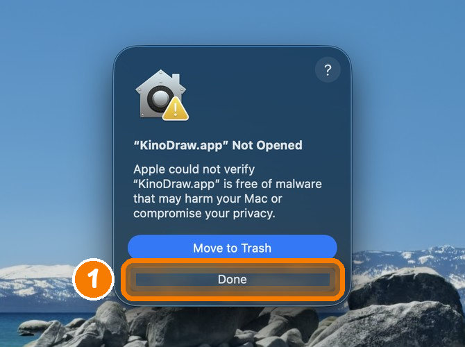
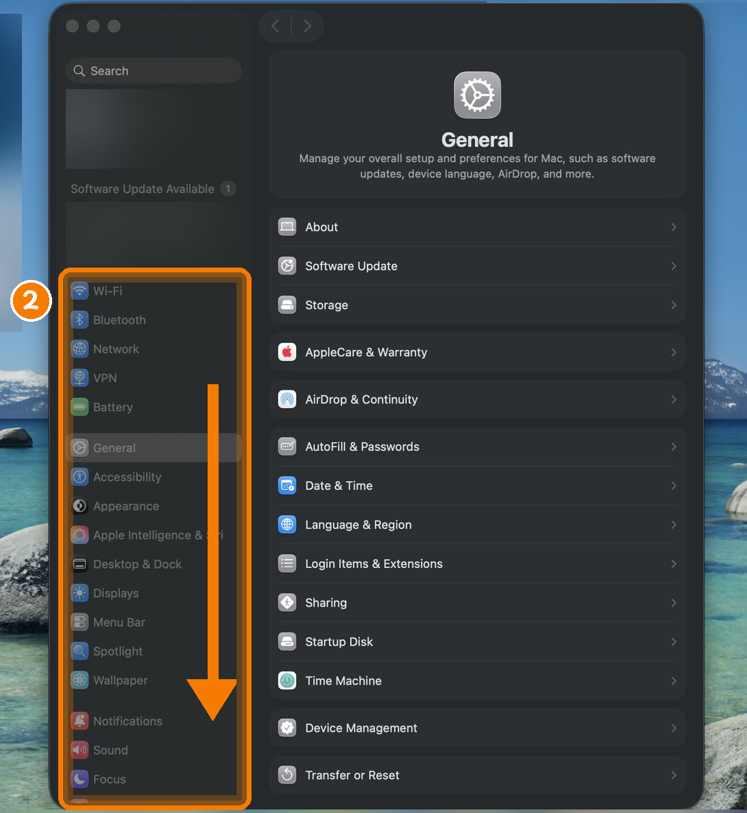
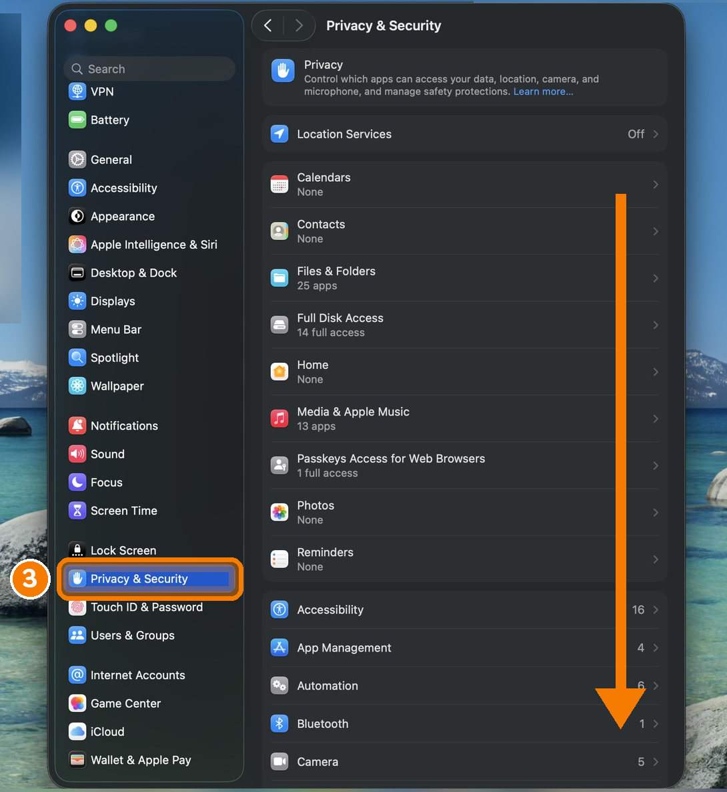
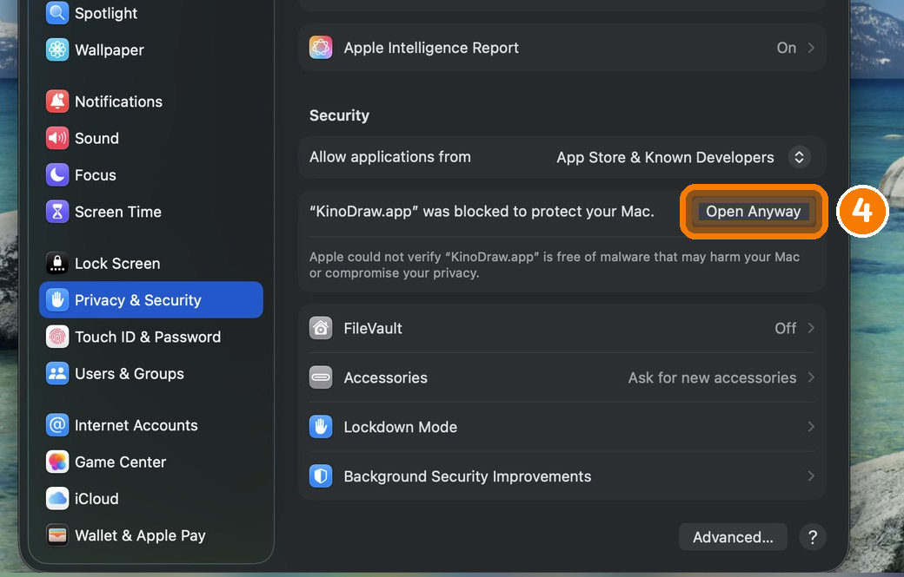
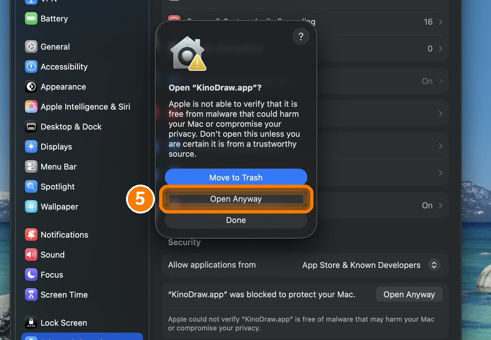
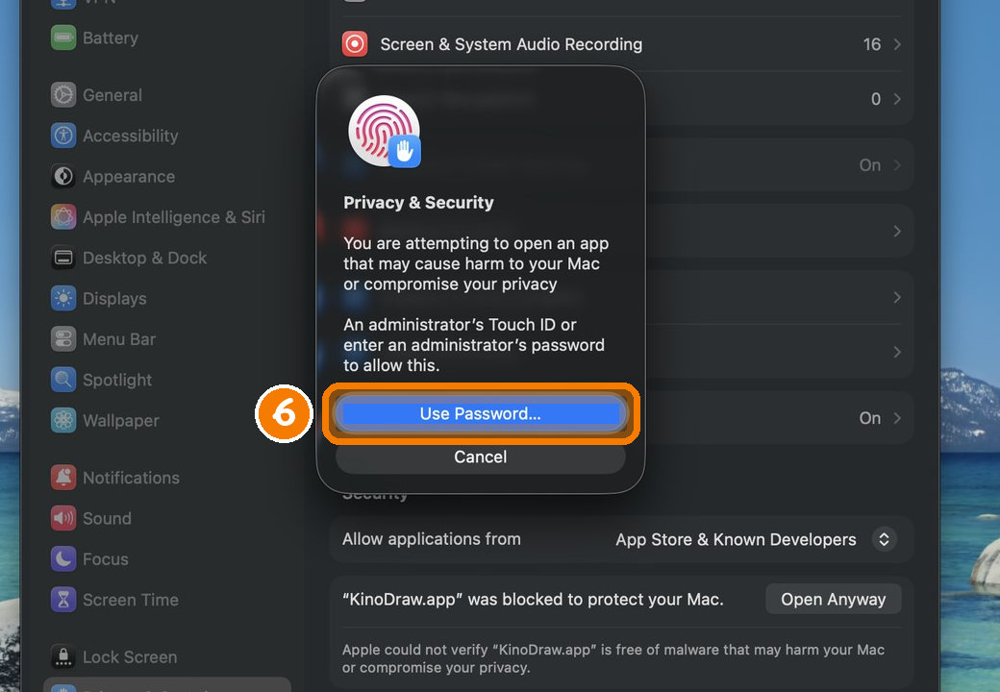

KinoDraw
Turn any script into a hand-drawn whiteboard explainer video, on your own computer. Free and open source, no watermark (just a 2-second end card you can turn off), works offline. In English and 中文.
KinoDraw runs on Mac, Windows and Linux computers. Open this page on one of those computers to download it.
Download Source on GitHubFor Windows · macOS (Apple silicon, M1 or newer) · Linux.
No account and no API key needed for the offline director.
Opening it the first time takes one extra approval: see how.
It opens on a finished example video. Your own first video downloads the voice (about 190 MB) and the doodle
search (about 70 MB), once, then takes about a minute. Every finished video ends with a short "Made with KinoDraw" card,
on by default; one click in the Studio turns it off (or kinodraw make --no-credit).
KinoDraw was called Doodle Studio before version 0.2.0. Close Doodle Studio first: KinoDraw moves your Doodle
Studio projects, settings and voice over the first time it opens.

First time opening on Windows
- Unzip the download, open the KinoDraw folder and double-click KinoDraw.exe.
- If "Windows protected your PC" appears, click More info → Run anyway.
On Windows 11 with Smart App Control turned on, Windows may block apps that aren't signed yet, like this one, and there's no Run anyway button.
First time opening on a Mac
The Mac app needs Apple silicon (M1 or newer) and doesn't run on an Intel Mac. To check yours, choose Apple menu → About This Mac: an Apple silicon Mac lists a Chip, an Intel Mac a Processor.
KinoDraw isn't notarized by Apple yet, so the first time you open it, macOS stops it. You approve it once:
- Unzip the download, drag KinoDraw to Applications and double-click it. macOS says it can't
check the app for malware. Click Done (don't move the app to the Trash).

- Choose Apple menu → System Settings, then scroll the sidebar on the left down.

- Click Privacy & Security, then scroll the right side down to the Security section.

- Next to "KinoDraw.app was blocked to protect your Mac", click Open Anyway. This button is available
for about an hour after you try to open the app; if it isn't there, double-click the app again first.

- macOS asks once more: click Open Anyway again.

- Touch the Touch ID key, or click Use Password… and enter your login password. KinoDraw opens, and
from then on it opens with a double-click, like any app.

These are Apple's own steps (Open an
app by overriding security settings). Right-click → Open no longer skips this on macOS Sequoia and later.
If macOS says the app is damaged, run xattr -dr com.apple.quarantine "/Applications/KinoDraw.app"
in Terminal once.
On Linux: unpack the download and run KinoDraw/KinoDraw.
How the Printing Press Changed the World
A 300-word script, turned into this 3½-minute video on a laptop, in offline mode.
For teachers: KinoDraw for Classroom
A Chrome extension that turns your lesson script into a hand-drawn video and posts it to your Google Classroom class. See how it works.
Free and premium AI directors
The video above was planned by the offline director: free, private, no account. Here is the same script planned by KinoDraw Cloud's AI directors, with the same voice and drawing hand.
GPT-6 Luna
Free plan: 5 videos a month. Sign in with your email in the app.
Claude Opus 5.5
Coming later as a paid plan.
Script in, video out

1 · Paste a script
Text, Markdown or a Word file. Each heading becomes a section.

2 · It plans the board
Every sentence gets a doodle; numbers become charts, dates become timelines, and definitions become sticky notes.

3 · It draws and speaks
A hand draws while a natural voice narrates. Captions, chapters, music and a thumbnail come with the video.
More examples
Why Is the Sky Blue?
Science · English
为什么我们需要睡觉？
Health · 中文 (Mandarin voice and handwriting)
What's inside
1,760+ doodles
279 original drawings plus 1,483 Fluent Emoji, all in one outlined style, and a recurring narrator in 8 poses.
Local voice
Kokoro neural voices run on your CPU. Drawings and captions land on the spoken word, within a fraction of a second.
Edit anything
Swap doodles, fix labels, retitle sections and preview frames in the Studio app before you render.
Checked output
Every video is decoded frame by frame, its audio compared with the mix, and its chapters verified.
Who plans the visuals?
| Director | Cost | |
|---|---|---|
| Offline | Free | Matches each sentence to the doodle library. Nothing leaves your computer. |
| KinoDraw Cloud | Free: 5 videos a month | GPT-6 Luna plans each section. No key needed; sign in with an email code. Paid plans with more videos and Claude Opus 5.5 come later. |
| Your own key | ≈ $0.02 per 15-min video with GPT-6 Luna | OpenAI, Anthropic, or any OpenAI-compatible server, including a local model. |
AI suggestions are checked by code before use: doodles must exist, drawings must start on words that are really spoken, and numbers and quotes must appear in your script.
For the command line
uv tool install git+https://github.com/edwardaiwang-svg/kinodraw kinodraw make my-script.md -o "My Video" kinodraw studio # the app window